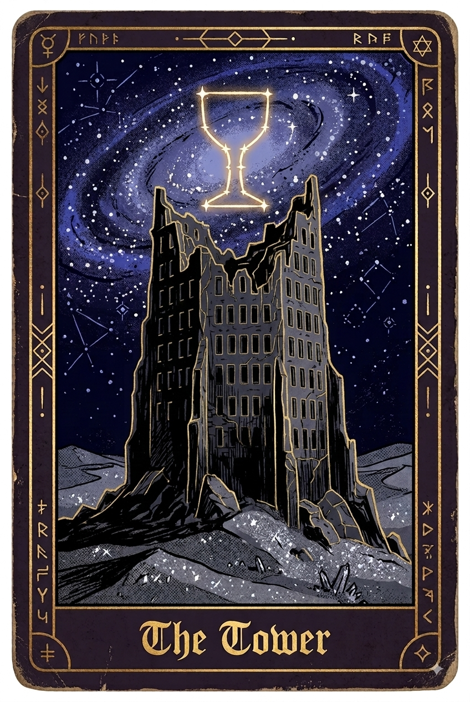

Void - II - The Tower The silver sand ran in every direction without end, and the stars above it were the only fixed things. The little shadow walked up and down the dunes. The landscape was devoid of anything, the shadow pressed on anyway, following the star sign he'd been given. He had been counting his steps for a while and then stopped. There was no point counting if you didn't know the distance, how long ago he had said goodbye to the others he had no idea. He thinks of them often. He will always think of them. He hoped they were okay, comfortable and looked after. He wondered if they thought about him. It was as he had climbed up to the top of the next dune that he saw a tower, or rather the tower, so tall that it reached the sky. It hadn't been there previously. It gave the shadow pause. Something pulled him toward it. He wasn't sure he trusted that feeling, but he had nothing else to follow. As he approached the gigantic structure he compared it to the illustration on the card that he had been given. He could see thousands of lights, colours, smoke and activity suggesting an entire city lived within the high walls of the tower. His card showed a hollow tower, empty and dark. He looked back at the noise and light in front of him and wondered if he had the wrong place. He crossed the silver sands. The gates emerged gradually, enormous, more of them than he'd expected, with lines of people already filing through each one. Even from a distance he could hear the commotion they were making as they marched into the tower. The people appeared to mostly be made up of large groups, wearing similar attire and colours whilst holding up banners, bells and flags. The little shadow pressed on and found himself merging into one of the lines. He was barely regarded, each of the groups seemed caught up among themselves. Some of them roared and cheered, some just gorged themselves on their provisions and some conducted tricks like juggling on the move. The crowd seemed to consist of two types of people, strange masked folk like he encountered on the caravan, and shadows like him. Except most of these shadows wore masks, but they were all half masks, their lower faces exposed unlike their larger masked companions. Within their groups the masks bore the same colours and expressions — the taller creatures and black shadows alike. Outside of the groups there did seem to be individuals, including maskless shadows like him. He wondered if any of them felt the same pull as he did and if any of them had any more answers than he did. He contemplated walking up to one of them to talk whilst they headed into the tower, but he thought better off it. “Hey!” A jovial voice came next to him. The shadow almost tripped over from the jump it had given him. Turning, a lanky creature dressed in motley colours leaned over to him, pale blue skin and a large golden mask with the expression of laughter. “Erm..hello?” He replied. “What brings you to the tower?”. “I'm.. I'm not actually sure. How about you?”. “Got caught up in the crowd, honestly, seemed like fun, so here I am” he said with theatrical shrug. The lanky creature seemed to constantly look back and forth between everything else going on, only paying a portion of his attention to the shadow. “So what's your name, little one?” he asked, half looking away. “...I'm not really sure myself”. “Selph you say?” He responded back, seemingly memorized by a bell someone was clanging. “No, I said- actually, sure, it's Selph” the shadow replied, thinking that a wrong name was better than no name. “Well nice to meet you Selph, I myself have been given the name Momos” he said whilst extending out a gloved hand. They shook hands. This ritual was familiar to Selph, a greeting. “Hey… Momos, do you mind if I ask…what are you?” Selph managed to ask. "Hah! Well, I'm a demon!” Selph stepped back. Something old and instinctive told him to run, and the fact that he couldn't name why bothered him more than the demon did. “Haha! Yes, that's your typical response, you racist! I can assure you that only half of your pre-assumptions are true, for some of us anyway!” He said, now fully engaged with Selph. Selph wasn't too sure what those pre-assumptions were, he just had a vague sense of negative stigma, very negative stigma. “We're denizens, born and bred here, so to speak, your lot are the dirty foreigners!” he said with a laugh and slap of his knee. Then in a hot flash, fire erupted within the group in front of them, killing any train of thought. “A fire breather! Now that looks like fun!” Momos declared, before he pushed his way through the crowd, leaving Selph walking by himself. Selph wondered about these demon's, were they a threat, not that any had brought him harm. All of them had made him feel uneasy, he wasn't sure why, was it their blase nature in this weird world, or was there something about them that he used to know? He decided to keep to himself for the time being and just observe. Eventually they made it to one of the great gates of the tower. Looking up it seemed as though the tower touched the stars themselves. Each level of the tower had its own decorative theme but all of them were vibrant as though they were in competition with each other. Large open arch-like windows lined the walls previewing a huge hive of activity. As he crossed the threshold denizens stood on many levels around the gate, bidding welcome and celebrating their arrival, throwing confetti and petals. His senses were overwhelmed, bands from every corner played all kinds of music, the smell of cooked goods emanated through the air and for the first time he felt warm. It was actual warmth, the first he could remember, settling into him like something returning rather than something new. There were floors and floors above him, with spiraling stairs linking to each, with dark pockets and hidden rooms on every level, but he could see that the centre was hollow all the way up. Selph then found himself in the middle of everything, crowds pushing to and fro in constant movement, climbing the stairs up into higher and higher levels. He watched the hundreds of groups ascend, seemingly knowing where they were headed. As he traced their ascent, he looked directly up to the top of the tower and where he expected to see a sky of stars, he found a sky of blue with clouds. He stood watching the slow moving clouds drift and he wondered what he'd see if he stood out over the top, perhaps a completely different world? Maybe this was why he was being pulled here, this other world could hold his answers. He then saw a familiar lanky figure climbing the steps, stepping over both shadow and demon alike, excited to get somewhere above. So he followed suit and climbed too. He joined some of the groups and started on the large stone steps that spiraled up. As continued up to the next floor, the sky was different, he could now no longer see the blue sky but bushes of bright and varied flowers. As soon as he stepped onto the first floor his sense of smell was flooded. Sweet, spiced, sour, metallic, wooden, just layers and layers of different smells stacked on top of each other. He then walked the floor and things began to change. Small masked creatures in one booth poured thousands of petals into giant bronze drums. He was hit with floral aromas that spoke of fields and bushes from another world. He continued on, seeing different rooms and booths producing and distributing different scents. He even saw a booth where a large demon sat in a tub of oil like a bath, as small shadows dispensed the perfume below from taps. It smelt like sweat, of wanting, a lustful scent. The different scents, life, death, decay and sex, all teased micro fragments of memory within him, reminding him of their existence, their allure. One of them stuck. It tingled something within his mind, a place, a time, a person. Vanilla and jasmine. A scent. Their scent. It nearly illustrated their appearance, but it could only give a vague outline, one he desperately tried to fill in, to no avail. Was he here for them? Perhaps he would find more further up. He pressed on towards the next floor. As he stepped onto the floor he was again overwhelmed, and again it was his sense of smell, sweet, sour, savoury, he then realised it was all food. Stalls and stalls that were all populated with kitchens that each seemed to be serving something unique. There were animals that he vaguely recalled alongside many others he felt sure that he had never seen before, all of them hung up, skinned and cooked. Something stirred low in him, where something ought to be. It growled toward the food, he was hungry, this was the first time he had been hungry. He had walked a desert and not once wanted food, but now he craved it. As though he had his mind read, a large silver masked demon with a smiling podgy face leant over and offered something to him on a stick. He took it. He took it and bit down before doubt could catch up with him. There was salt, rendered fat mingled with a sweet sauce and an umami crunch of a crispy outer skin. There must have been a combination of only a handful of ingredients, but that had been cooked to perfection, they had been entirely mastered. “You're welcome” the large demon chef said as he laughed at Selph’s stunned expression. He considered staying at the stand, to explore the many other delights this chef had put onto a stick. Then he looked around on the floor, and among the many kitchens and looked upon the others that had stayed. They were all eating. Continuously eating, demon and shadow alike, pouring food into themselves. They had been enlarged, some of them unable to move, to the point that smaller demons had them propped up. He put down his stick and left. But something tickled his nose and made him salivate. It was breaded, golden and dipped in sauce. A different demon chef offered up, this one was small and podgy but bearing a similar fat faced mask. He knew he shouldn't, but he did anyway, just a bite. In a flash of taste sensation time seemed to skip and realized he had eaten an entire plate. What had he accomplished? Nothing. He needed to move on, but the golden goods called to him. Again he salivated. The chef was more than happy to offer up a new batch, he wanted to try them, but he momentarily looked away as he considered it. As he looked away, he noticed something. A familiar lanky figure sticking out from the top of a crowd, it was Momos. He juggled some ball shaped food before catching and swallowing them, finishing with a bow, before moving on disappearing. Staying here any longer didn't feel right, not only it didn't feel right but it felt like a risk, so he decided to move on. Before he did, he spotted a booth which had people turning on a spit, roasted and crisped. He hoped that's not what he had eaten, regardless of how good they smelt. Up he went. This time when he stepped onto the next floor he was dazzled with lights causing him to wince. He took in a huge plethora of sights as his eyes adapted to the environment. There were sculptures, paintings, exotic animals and again stages, but instead of bands there were performances. Elaborately dressed performers threw and caught each other, they swung from trapezes and walked along ropes. In-between fireworks exploded, shooting sizzling lights in all directions. Crowds gasped, cheered and clapped. “Selph!” Came a familiar jovial voice. Momos was perched on the wall, cross-legged, watching a demon and shadow duo arc through the air toward each other. "Good timing" he said, without looking away from the performers. Selph watched them too for a moment. "Do you know them?" "No." A pause. "Do you know anyone here?" "I don't know anyone anywhere," Selph said. Momos was quiet for a beat, which was unusual. "Mm" he said finally, as though that confirmed something he'd been wondering. The duo flipped through the air, the partners catching each other, successfully making a dazzling jump. "You went back for seconds," he said as Selph approached, still not looking at him. Selph stopped. "What?" "On the food floor. You went back." He finally glanced down. "It's fine. Most do." "Were you watching me?" "I watch everyone," Momos said lightly, and threw a piece of popcorn in the air, catching it in his mouth. "Occupational habit." "What's your occupation?" He smiled — Selph could tell even behind the mask. "Having fun, little one. Same as everyone here." He gestured broadly at the crowds. "Well nearly everyone…” he continued whilst looking back at Selph’s expression. “Don't be so glum little one, you lot are all here to have fun anyway, so have some fun!” He said before playfully throwing some popcorn at Selph. Before Selph could ask what he meant, someone in the crowd jostled him and when he turned back the wall was empty.. A shadow half his size dragged a brush across a canvas thirty feet high, painting a figure so idealised it looked like a memory of a person rather than a person. There were only beautiful works, illustrating attractive figures and colourful landscapes, not a blemish or anything ugly or challenging. He walked past a canvas which shifted and swirled with oiled paint. As he stood next to it, forms began to take shape, eventually taking on the image of three shadows in the sand. It shifted again and showed them at a caravan. Again it shifted, but all three of them were together, sitting round a large fire at the caravan. He couldn't look at it anymore. He pressed on, walking past organised fights, athletic games, and acts of sex, all conducted in front of crowds of faces which never turned away. The groups within the crowds that ascended upwards with him were a lot less varied than how they were at ground floor. A lot of the groups were carrying instruments whilst many others dressed in tight exposed clothing, their general excitement seemed to be building the further they climbed. This time he braced himself as he stepped onto the next floor. He was still overwhelmed, but this time it was his ears, a cacophony, bassy drums pounded as chirping string instruments were struck and above it all thousands of noises sung over each other. Instead of shops the floor was filled with stages, bands of all different kinds jammed away, the members a mixture of demon and shadow. Some were heavy, some were soft and dramatic and others were rhythmic and infectious. He was drawn in. They had been surrounded by crowds that danced, all to the rhyme of the music. He found himself caught up, not knowing how to dance but moving regardless, stomping his feet and rocking his shoulders. In the moment he saw flashes, he had danced before, not any better than he danced now but he had danced. It reminded him of a joy, a distant joy that felt like it was on the other side of a glass window. He didn't know where or when but his feet remembered something his mind didn't, and he chased it. The guiding pull began to tug at him, telling him this wasn't the place, but he ignored it. He threw himself into it, eyes closed, chasing something just behind the rhythm. A room. A specific light. Someone's hands. The beat kept promising and withholding in equal measure, and he kept stamping, kept reaching, certain that one more bar would crack it open. Everything else began to fade out, there was now only the rhythm. In a loop pounding over and over forever. He started to forget what he was looking for and so he stopped worrying. Stomping and jigging, riding the musical waves became the only thing. He wondered if he should just exist in this state, until eventually all existential thoughts faded out too. He could remain here, forever. Then something cut through the haze, a magnetism, a pull. He wondered what it was and what it wanted. He contemplated ignoring it and staying here, but felt that would be wrong somehow. So he held onto the feeling and was plucked back into the waking world. He gasped as he readjusted to his surroundings, he was back in the crowd of dancers. The dancers around him now appeared daunting, he physically recoiled as he bumped and knocked into him with their moves. It was time to leave. He escaped the crowds and caught his breath at the stairs. Off in the distance was a familiar colorful figure, Momos. He was blowing a trumpet whilst climbing the stairs before he threw it somewhere, not looking where and laughed, disappearing to the next floor. Selph pursued. Up again he went, wondering what his next encounter would be. He stepped through with his eyes shut, ears cupped, waiting. Nothing came. He lowered his hands and looked. All around him was a sea of movement, demon and shadow alike were on top of each other. It was like a living chain mesh of people, with bodies intertwined and writhing. He looked up to the centre of the tower and found there was no sky or stairs, instead there was a mirror, and in its large reflection were all the intermingled bodies in front of him. Sweat and moaning filled the air as Selph began to carefully step through. Hands and even tails caressed him as he walked passed, sending electrostatic shivers across his skin. Eventually he managed to leave the main hall of people and began to walk through the smaller booths. The booths were dark and lit with heavy purples and reds, half concealing figures that were performing various and bizarre sexual rituals. The booths continued to become darker, the whips and sticks that hung from the walls began to be replaced with knives and hammers. The moans began to transform into screams. Selph picked up the pace, shifting through the hallways with increased urgency. A large figure stepped out in front of him. It was a demon, feminine, but unlike any he had seen before. Her mask was a metallic red with an expression of ecstacy. He thought her skin was red before he noticed she in fact had no skin, it was exposed red flesh, stretched thin by her shiny leather outfit. Selph didn't move, hoping his stillness could make him invisible. She leant forward, towering over him, until he stood entirely in her shadow. Then took one of her metallic clawed hands and placed her fingers on his crown. He wondered if she was going to strip his flesh. Instead she expanded her hand and ran her claws across the top of his head. Electric ripples travelled down his body, with such intensity. The world around him whited out in that moment, it was a distilled pleasure, a flood of it, that had him collapse to the floor with a gasp. He wondered if he could stay here, in this moment, forever. The fact he wanted this made him feel bad for some reason, bad enough to resist it. He shook his head and reversed out from underneath the demon. She tilted her head and placed her hands behind her back, Selph could feel she was smiling at him. He looked up at her dumbfounded, before he scrambled to his feet and ran. She waved at him as he now sprinted away down the hallway. Eventually Selph had come to an illuminated section which no longer had any screaming or moaning. Everything here was soft — the floors gave underfoot, the walls were padded, even the light felt gentler. He stopped his running, taking in his surroundings with wonder. He could see the stairs but before he approached them a small demon to his side stood facing him, with arms outstretched. His mask looked like the face of a smiling child and he wore simple pastel clothing. Selph stood and looked at him, sensing no harm he stepped closer, the demon remained facing him with his arms out. Selph took him up on his offer and wordlessly hugged him. Selph again was hit with a memory, but a clear memory, a recent one. He thought of the two small shadows he said goodbye to at the caravan. He thought of their last embrace. Selph stepped back and thanked the demon. He turned away, but found he was no longer where he was previously. The stairs weren't there. He was in the hallways, the dark hallways. He contemplated running, but he had been turned around, he had no idea where he needed to be headed. Then it hit him. Vanilla and jasmine, that sweet warning scent of a distant life, a distant person. He traced it and turned to a darkened room. A demon stood looking at him. Feminine, but not intimidating like the last one, her mask bore a subtle smile that paired with her petite figure. A curled finger invited him in. He stepped forward, simultaneously hypnotized by the past, present and future, she was there in all of them. He took her hand and the shivers came immediately, prickling up through him in waves. The scent was right. Close enough. He told himself close enough was enough. He told himself this twice. The second time he almost believed it. Then her hand shifted slightly in his and the scent shifted with it, just a fraction off, and that fraction was everything. He tried to ignore this but he couldn't deny it, it wasn't her, whoever she was, he was looking at a memory, or perhaps not even that, an imagination of a memory planted onto a demon. She caressed his hand, massaging his palm with her thumb, it whispered an echo of something that was or perhaps something that could have been, he wasn't sure. He tried to force it, closing his eyes, he tried to imagine who she was, who she could be, but nothing stirred in him, it was empty. He would be pretending, but worse than that, he would be pretending whilst being painfully aware he was doing just that. He stepped back as cold realization cut through his warm dreams. She tilted her head as he let go of her, it surprisingly ached to do so. It would have been so easy to change his mind, to give in, but it wouldn't have felt right. This was not the place. He found his way to the stairs. As he ascended to the top floor he was nearly blinded by an all encompassing white light. As he adapted to the brightness of the room he could see a large elevated platform in the centre and everything else was bright white. There were no stars, there were no blue sky or flowers, no landscape to look out on just white light. Robed demons calmly walked through the garden. He occasionally saw them helping shadows walk up the final set of stairs up onto the platform. He decided to walk up himself to see what sat at the very top of the tower. It was a garden, a rich vibrant garden, broken up by small ponds that were densely populated with large lotus flowers. Then dotted throughout the garden were shadows, all flat on their back, facing the above and motionless. “They're not dead” came a soft spoken voice. Selph turned, seeing an older looking demon in robes with the metal face of a smiling old man. “What's happened to them? Are they okay?” Selph asked, now looking at how far away the stairs were. “More than okay. They ate the lotus and now they are in total bliss.”. “What do they do, the lotuses?”. “Everything” he said with a cryptic pause. Then before Selph could press he continued “everything you've seen here in the tower, every sense, all of your perceptions taken to their absolute maximum at once, both positive and negative folded in a bright white, forever”. Selph no longer found the demon's smiling mask comforting. “Would you like a bite?” The demon asked as he procured a white lotus from within a deep sleeve. Selph thought about when he was dancing and when that tall demon stroked his head, those feelings had overwhelmed and paralysed him. Presumably they were but a slither of what he could conceptually conceive as ‘everything’. He contemplated what it could be like to experience ‘everything’, could he manage just having a small taste, a lick of this so called ‘bliss’? Selph picked up the lotus, beautiful yet unassuming given its devastating promise. “Cheating” came with a jovial voice. Selph turned to see Momos hanging from one of the garden trees. “Everything all at once, for nothing in return, a bit cheap no?” He said whilst hanging upside down. The old-man faced demon twitched, seemingly not happy with Momos’ comments, but he made no retort. Selph thought on Momos' words, it was tempting to say goodbye to everything else and throw himself into endless bliss, like the many other shadows splayed out in the garden. He smelt something from the lotus flower. Vanilla and Jasmine. Her, whoever she was, even the flicker of her memory, he could climb into his fragment of memory, forever. “Suffering isn't just physical pain,” the old demon said. “You can end all of your suffering if you want to”. Selph felt sincerity in his words. He became painfully aware of his loneliness and his aimless drifting, it could all be for nothing, he could be endlessly walking the desolate sands. He could say goodbye to that and curl up into bliss. It would be easy too. But to what end, endless sights and sounds and everything else; the end result given freely without any work, any risk, any loss, any connection, just reward only, but to what end? The empty part of Selph's heart called for it, it told him he deserved it, when it questioned that it then told him that it was the better alternative to the cold and uncaring world. To no end. He thought about the familiar scent of Vanilla and jasmine, perhaps if he took from the lotus he could bathe himself in the aroma to its fullest, but he wouldn't know to whom it belonged, he wouldn't have any answers. Selph put the lotus back into the old demon's hands. The old demon didn't persist or even react, he simply took the lotus and wandered elsewhere. “Glad you agree!” Said Momos with a laugh, as he flipped himself down from the tree. Selph reflected in himself, he had reached the pinnacle of the tower and found no answers, he had witnessed every pleasure available, but they all ultimately seemed hollow. What now? Was this a dead end? A misguided waste of time? He closed his eyes, focused himself and looked for that familiar feeling, the pull. It was absent. “What's up Selph?” Momos' asked. “Fancy leaving, want to find somewhere fun?” He asked. “This place has started to feel boring,” he continued. It certainly wasn't boring, Selph thought, he could have whatever he wanted and he could have it continuously forever. He looked at the shadows around the garden with envy, whatever they wanted or at least whatever they thought they wanted they now had. Such an easy end. He could bring an end to his journey right here though. It didn't feel right though, pleasure upon pleasure without working for it, it had something missing. It felt heartless. Then suddenly it was there, the pull, it was back. It pulled upon him, but it didn't pull him here any longer, it pulled him somewhere else, somewhere distant. “Why are you following me Momos?” Selph asked in return. “Honestly, not sure, I just follow the flow really," he said with a shrug. “That sounds like a good idea actually Momos” said Selph. The two of them left the tower, a few tasty kebab sticks for the road. The pull was back, distant but certain. This felt right.